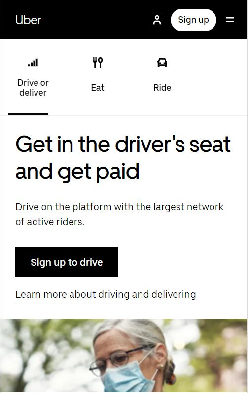
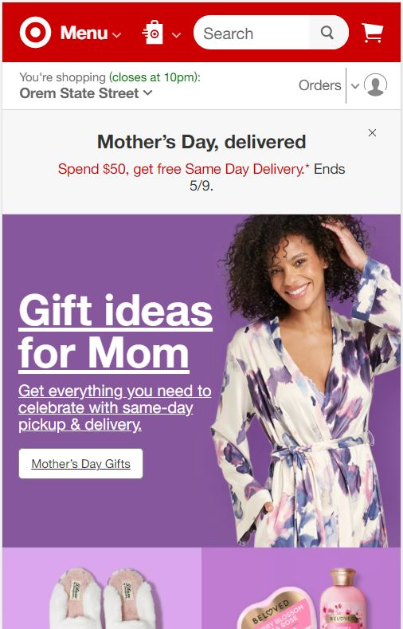
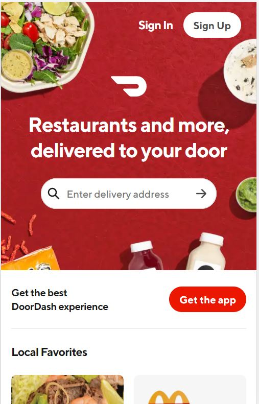

Contrast
Uber

Uber's design is minimalistic with maximum contrast in black and white. The black background on the header with contrasting button backgrounds keeps the interface interesting and easy to read. The stark contrast makes it especially easy to navigate and read on a smart phone as well as a desktop computer.
Proximity
Target

Target's design is wisely grouped into easy to read section. This tells the brain that all the wording which is in close proximity is related to each other. The ideas for Mother's Day gifts is all grouped together and the brain easily understand that it can click on the button under this title to get ideas. Even the smaller heading of where your shopping is easy to see and seperate from the rest of the text because of the proximity between the text around it.
Alignment
DoorDash

Doordash's design uses alignment to it's advantage to help keep the eye on the page longer. The transition from right alignment of the top menu to centered to left alignment helps the eye flow down the page. The different alignments helps break up the page into sections that are easy to see and seperate.